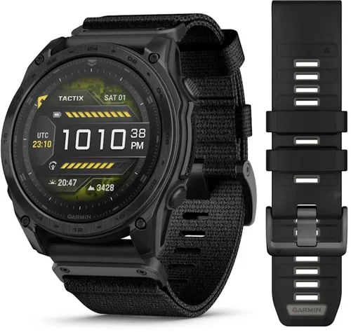
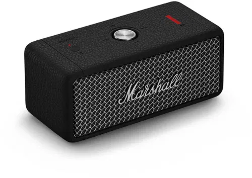
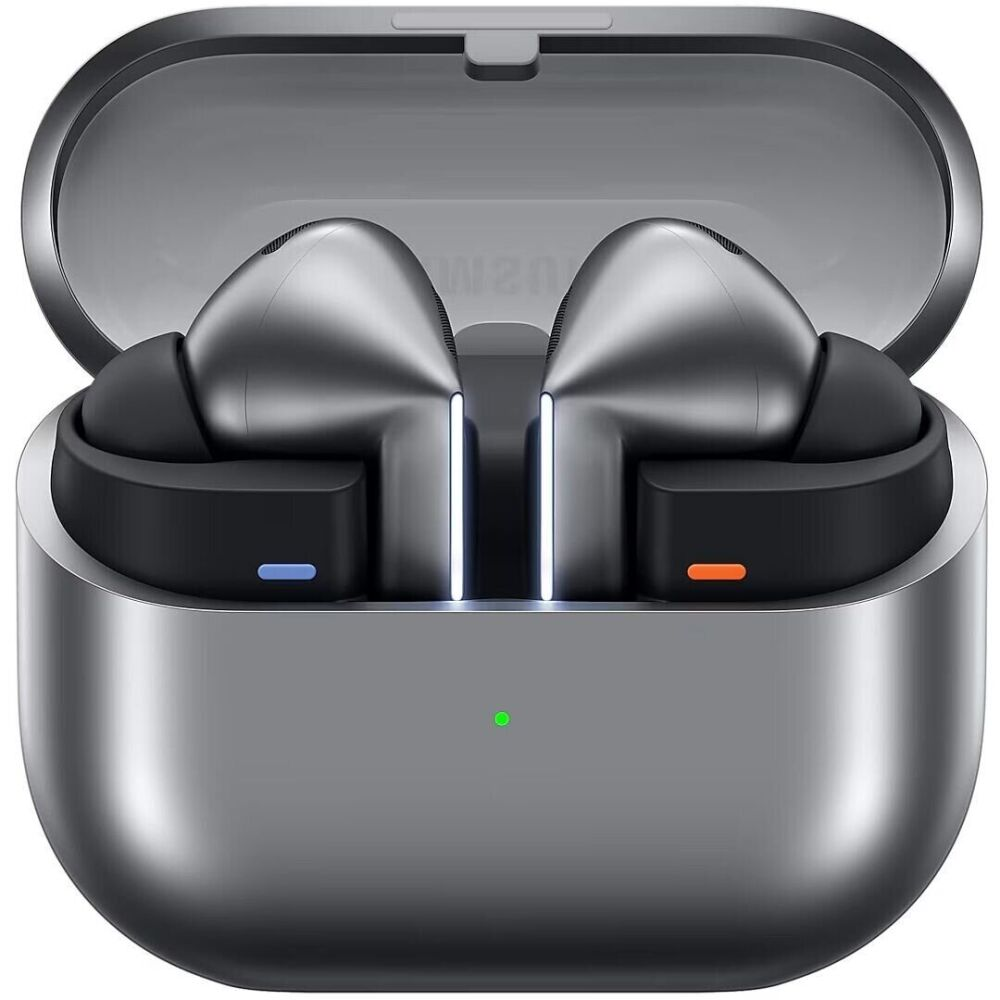

Блокова модель документа (CSS Box Model). Відступи та межі.
Що демонструє ця сторінка
Ця сторінка створена для демонстрації блокової моделі CSS. У роботі показано,
як поводяться content, padding, border і margin, як працює глобальне скидання
стилів, як центрується контейнер на сторінці та як за допомогою відступів і меж
можна створювати охайні картки товарів.
Box Model
Демонстраційний блок
У цього блоку є фон, рамка, внутрішній відступ і зовнішній відступ.
Саме на ньому зручно дивитися різницю між padding і margin у DevTools.
Якщо відкрити інструменти розробника і навести курсор на цей елемент,
можна побачити кольорову схему блокової моделі.
Що написано в завданні: Відкрийте інструменти розробника в браузері (F12 або права кнопка -> Inspect). Наведіть мишку на ваш елемент в коді. Ви побачите різнокольорову схему: помаранчевий (margin), жовтий (border), зелений (padding), синій (content).
Картки товарів
Нижче показано приклад трьох карток, побудованих через блокову модель.

Garmin Smart Watch
Найсучасніший тактичний смарт-годинник.
З tactix 8 ви будете на висоті. Це оптимальний тактичний смарт-годинник з дисплеєм, що заряджається від сонячної енергії, з титановим безелем, сапфіровим склом і можливістю пірнання на глибину до 40 метрів.
Ціна: 74 000 грн

Marshall Speaker
Портативна колонка Marshall.
Emberton II видає насичений, чистий і гучний звук, як і замислювалося виконавцем. Два 2-дюймових широкополосних динаміка і два пасивних випромінювача забезпечують важкий звук Marshall, який ви знаєте і любите.
Ціна: 5 499 грн

Samsung Earbuds
Навушники Samsung Galaxy Buds3 Pro.
Звучання нового покоління. Чистота звуку, яка дає змогу почути все до дрібниць, – ось на що здатна 24-бітна технологія CODEC. Відчуйте революційно нову якість звучання завдяки системі шумопоглинанню на базі технології Galaxy AI та функції перекладу в режимі реального часу.
Ціна: 9 799 грн
Висновок
У цій лабораторній роботі продемонстровано, що будь-який HTML-елемент у CSS
розглядається як прямокутний блок. Саме правильне керування шириною, padding,
border і margin дозволяє будувати акуратний інтерфейс без зламаної верстки.
Використання box-sizing border-box робить розрахунок розмірів набагато
зручнішим і передбачуванішим.